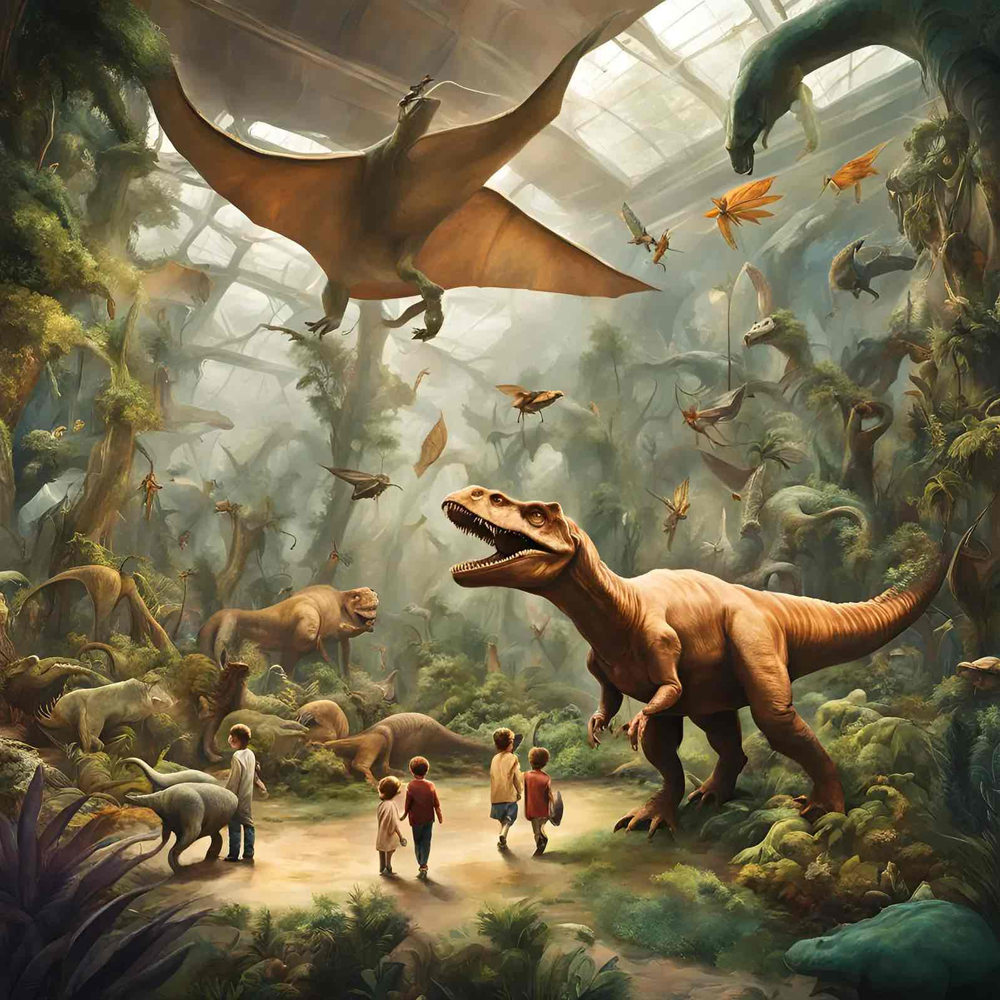

Experience our exhibitions
Space Exploration


Blast Off: A Journey Through Space Exploration
The Space Exploration Exhibit at the Community Science Museum invites visitors to embark on an unforgettable journey across the cosmos. Begin your adventure with the story of humanity’s first steps into space, from Sputnik’s historic launch to the Apollo moon landings. Through dynamic displays and life-sized models of rockets and spacecraft, you’ll gain insight into the challenges and triumphs of pioneering space exploration. Visitors can even step into a replica of a command module to experience what it’s like to be an astronaut.
Explore the Wonders of the Universe
Delve into the mysteries of space with interactive exhibits that highlight the latest discoveries in astronomy and astrophysics. Marvel at the beauty of distant galaxies in stunning 3D visualizations and learn about the science behind black holes, nebulae, and exoplanets. The exhibit also features a cutting-edge planetarium, where visitors can take guided tours of the night sky and witness breathtaking recreations of cosmic phenomena like supernovae and solar eclipses.
The Future of Space Travel
Peek into the future with exhibits showcasing the next frontier of space exploration. From Mars colonization concepts to the development of advanced spacecraft, this section explores how innovation and technology are paving the way for interplanetary travel. Visitors can try their hand at controlling robotic rovers, design their own space habitats, and explore the role of artificial intelligence in future missions. This interactive and forward-looking exhibit promises to leave you inspired about the limitless possibilities of space exploration.
Botanical

Step Into Nature: A Living Exhibit
The Botanical Exhibition at the Community Science Museum invites visitors to immerse themselves in the stunning diversity of plant life. As you stroll through this lush, vibrant space, you'll encounter a variety of ecosystems—from tropical rainforests to desert landscapes—each carefully recreated to showcase the unique flora found in nature’s most fascinating environments. Interactive elements throughout the exhibit allow visitors to touch, smell, and learn about the plants that play crucial roles in our ecosystems, offering a sensory experience like no other.
The Secrets of Plant Growth
Discover the incredible science behind how plants grow and thrive. The exhibition features hands-on displays that explain the processes of photosynthesis, pollination, and seed dispersal in engaging and accessible ways. Learn how different plants have adapted to their environments, whether by developing water-storing abilities in cacti or using vibrant colors to attract pollinators in the rainforest. Interactive microscopes also give visitors the chance to view the intricate details of plant cells, seeds, and roots up close, offering a fascinating look at the building blocks of life.

From Seed to Bloom: The Life Cycle of Plants
n this section of the exhibition, visitors can follow the journey of a plant from seed to full bloom. Through real-time time-lapse videos and educational demonstrations, you’ll witness how a tiny seed grows into a thriving plant and learns to survive in the natural world. Kids and families can engage in planting their own seeds, observing their growth over time, and even taking home their creations. This part of the exhibit emphasizes the importance of nurturing plants and understanding the cycles that sustain life on Earth.
Conservation and the Future of Our Ecosystems
The exhibition also shines a spotlight on the critical role plants play in our environment, highlighting the importance of conservation efforts to protect endangered species and fragile ecosystems. Visitors will explore how climate change, deforestation, and habitat destruction threaten plant diversity, and how botanical gardens and conservation initiatives are helping preserve plant species around the world. With interactive displays, virtual reality experiences, and expert-led talks, this section empowers visitors to take action and learn how they can contribute to the preservation of our planet’s green treasures.
Dinosaurs
Welcome to the Age of Dinosaurs
Step back in time to the land of giants at the Dinosaur Exhibit at the Community Science Museum! As soon as you walk in, you’ll be surrounded by life-sized models of some of the most famous dinosaurs that roamed the Earth millions of years ago. From the mighty T. rex to the long-necked Brachiosaurus, you’ll feel like you’ve traveled to a world where massive creatures ruled the land, sea, and sky. Get ready to discover how these incredible animals lived, hunted, and survived during the age of dinosaurs!
How Do We Know About Dinosaurs?
Ever wonder how scientists know what dinosaurs were like? In this section, you’ll learn all about paleontology—the science of studying ancient life through fossils! Explore the tools and techniques paleontologists use to uncover dinosaur bones, footprints, and teeth. You can even try your hand at being a fossil hunter by digging for replicas of real dinosaur bones and identifying them with the help of special guides. It’s your chance to become a young paleontologist and piece together the puzzle of prehistoric life!
Meet the Dinosaurs: Carnivores vs. Herbivores
Not all dinosaurs were the same! Some were fierce hunters, while others were plant-eaters. In this part of the exhibit, you’ll meet both types of dinosaurs. Learn about the terrifying carnivores, like the fearsome Velociraptor, that used sharp teeth and claws to hunt their prey. Then discover the gentle herbivores, such as the Stegosaurus, who munched on plants and traveled in herds for protection. Through interactive displays, you can compare their sizes, diets, and special features to understand how each dinosaur adapted to survive.
Dinosaur Habitats: Where Did They Live?
Dinosaurs didn’t all live in the same environment! Explore the different habitats where these ancient creatures lived, from lush forests to dry deserts. Learn how the climate, plants, and geography shaped the dinosaurs’ lives. You’ll find out what kinds of plants grew during the Mesozoic Era and how herbivorous dinosaurs fed on them. Through immersive exhibits, you can step into a recreated Mesozoic forest and see what it would have been like to live alongside these amazing creatures.
The Extinction Mystery
How did dinosaurs disappear? It’s one of the biggest mysteries in history! In this section, we’ll explore the theories behind the mass extinction event that wiped out the dinosaurs. Was it a giant asteroid that hit Earth? Or was it massive volcanic eruptions? Through interactive displays, you can learn about the evidence scientists have found that helps explain this mystery. See the dramatic changes in Earth’s climate and ecosystems, and how they may have affected the dinosaurs’ survival.
Be a Dinosaur Expert!
After exploring the exhibit, it’s time to test what you’ve learned! Head over to the Dinosaur Lab, where you can participate in hands-on activities that will make you feel like a real dinosaur expert. Create your own dinosaur by mixing and matching different features, or complete a scavenger hunt to discover hidden facts about the creatures you’ve just met. Whether you’re assembling a dino skeleton or learning to identify dino tracks, this interactive experience is the perfect way to wrap up your dinosaur adventure and show off your new knowledge!
Modern Science
The World of Technology: From Past to Present
Step into the world of modern science with the Technology Exhibit at the Community Science Museum! In this exciting space, you’ll learn how technology has evolved over time. From the first computers that took up entire rooms to the smartphones in your pocket today, you’ll see how inventions have changed our world. Explore cool gadgets and machines, like robots that can do everything from play music to help doctors in surgery. You can even try out some of the latest tech yourself, like virtual reality headsets and 3D printers!
Space-age Innovations: The Future is Now
Have you ever wondered what life might be like in the future? In this section, you’ll get a sneak peek into the cutting-edge inventions that are shaping the world of tomorrow. Discover how scientists and engineers are designing self-driving cars, advanced robots, and space exploration technologies. Learn about smart cities, where buildings and streets use technology to make life easier, and get hands-on with futuristic tools that may one day become part of your everyday life. With interactive displays, you’ll feel like you’re part of the next wave of scientific discoveries!
The Power of Energy: Fueling the Future
In the Energy and Sustainability Exhibit, you’ll explore the different ways we use energy today and how we can create a cleaner, greener future. Learn about renewable energy sources, like solar power, wind energy, and hydropower, that help protect our planet. See how scientists are developing new ways to use energy more efficiently and reduce pollution. You can even test your own energy-saving skills by designing a solar-powered car or building a wind turbine to see how much energy you can generate. It's the perfect chance to learn how you can help save the Earth!